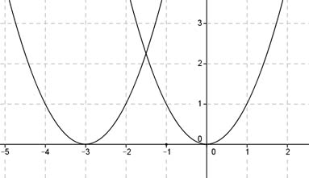

Aufgabe 103 Wie lautet die Funktionsgleichung einer Normalparabel, die um 3 Einheiten nach links verschoben wird?  Allgemeine Scheitelpunktform einer Normalparabel: y = a(x - xS)2 + yS Alter Scheitelpunkt bei S(0|0), neuer bei S(-3|0), das bedeutet xS = -3 , yS = 0. In die Scheitelpunktform eingesetzt: y = (x - (-3))2 + 0 y = (x + 3)2 = gesuchte Funktionsgleichung.